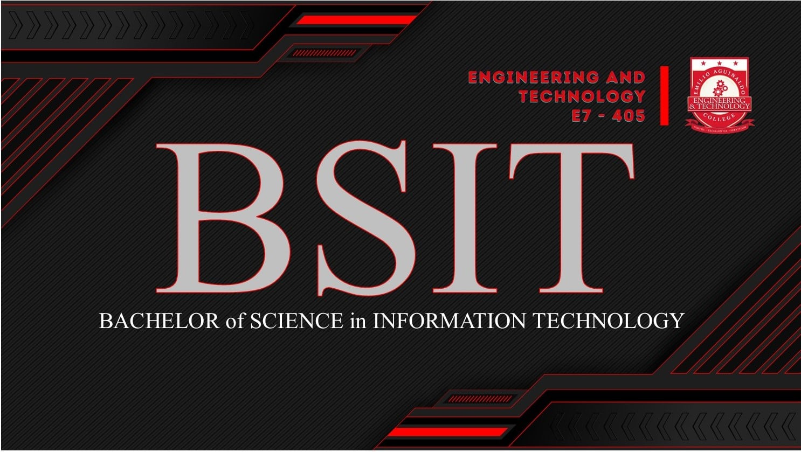
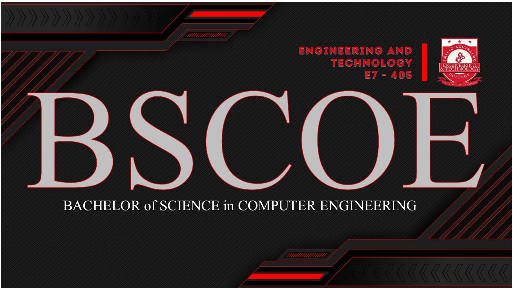
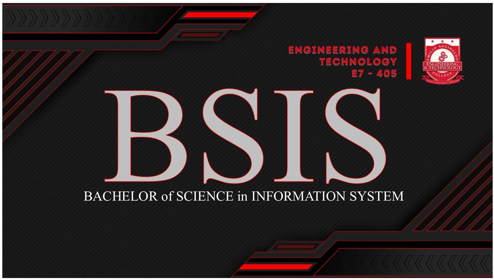

Welcome to Emilio Aguinaldo College's School of Engineering and Technology, where innovation meets excelence. our institution is dedicated to shapiong the next generation of engineers and technologists who will drive the future in industry and infustructure. With strong emphasis on cutting-edge research, practical skills, and commitment to ethical practices, we prepare our students to tackle the challanges of the modern world. Join us at the School of Engineering and Technology, where your passion for engineering and technology can flourish into a fulfilling and impacful career.
 
The Bachelor of science in Information Technology (BSIT) program is designed to equip students with practical skills and knowledge necessary to excel in the fast-paced world of IT. This program covers a broad spectrum of topics, including network administration, cybersecurity, web development, and database management. Students will gain hands-on experience through industry-relevant projects, preparing them for careers as IT professionals in various sectors, including business, healthcare, and government
The Bachelor of science in computer engineering (BSCOE) program integrates the principles of electrical engineering and computer science to prepare students for careers in designing and developing computer systems and hardware. Students will study topics such as microprocessors, emebeded systems and digital signal processing, combining theoretical knowledge with opractical applications. Graduates of this program will be equipped to work in diverse fields, including telecomunications, robotics, and hardware development.
The Bachelor of Science in Computer Science (BSCS) program offers deep dive into the theoretical foundationsand practical applications of computing. Students will explore areas such as algorithms, sofware development, artificial inteligence, and data structures. The programs emphasizes problem-solving and innovation, pre[aring Graduates for roles in sofware engineering, data analysis, and research, as well as for advanced studies in computer science and related fields.
The Bachelor of Science in Information system (BSIS) program focuses on the intersection of businessand technology. Students will learn how to design, impliment, and manage information systems that support organizational operations and decision-making. The coriculum includes topics such as system analysis, database management, and business intelligence, providing students with skills to becoome a proffesional IT managers, systems analysts, and consultants in a variety of industries.